十案已有独立实际试玩场景，双击 test/launchers/run_forest_candidates.cmd 进入。此页保留原始草图；正式世界接入仍待选案。A/B共用外部出口。
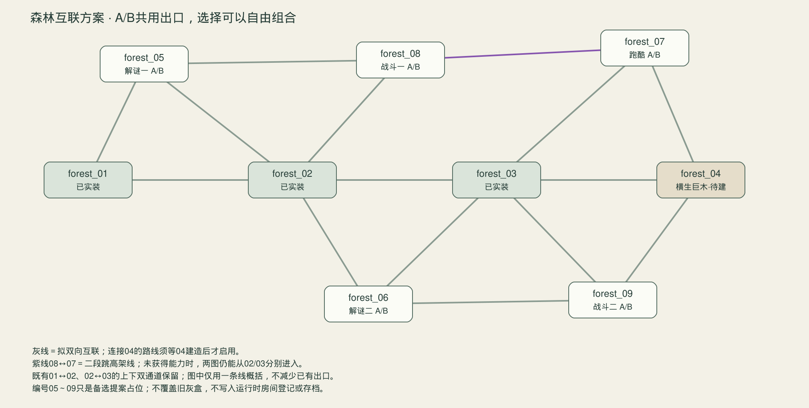
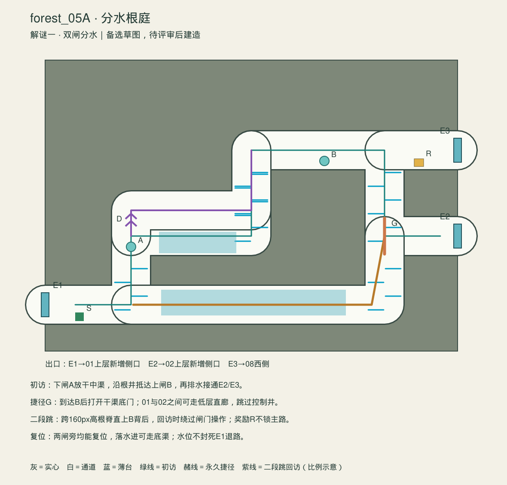
初访：下闸A放干中渠，沿根井抵达上闸B，再排水接通E2/E3。
捷径G：到达B后打开干渠底门；01与02之间可走低层直廊，跳过控制井。
二段跳：跨160px高根脊直上B背后，回访时绕过闸门操作；奖励R不锁主路。
复位：两闸旁均能复位，落水进可走底渠；水位不封死E1退路。
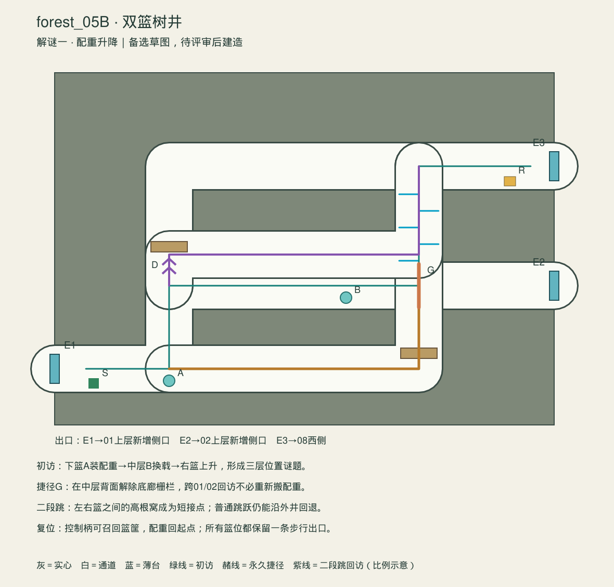
初访：下篮A装配重→中层B换载→右篮上升，形成三层位置谜题。
捷径G：在中层背面解除底廊栅栏，跨01/02回访不必重新搬配重。
二段跳：左右篮之间的高根窝成为短接点；普通跳跃仍能沿外井回退。
复位：控制柄可召回篮筐，配重回起点；所有篮位都保留一条步行出口。
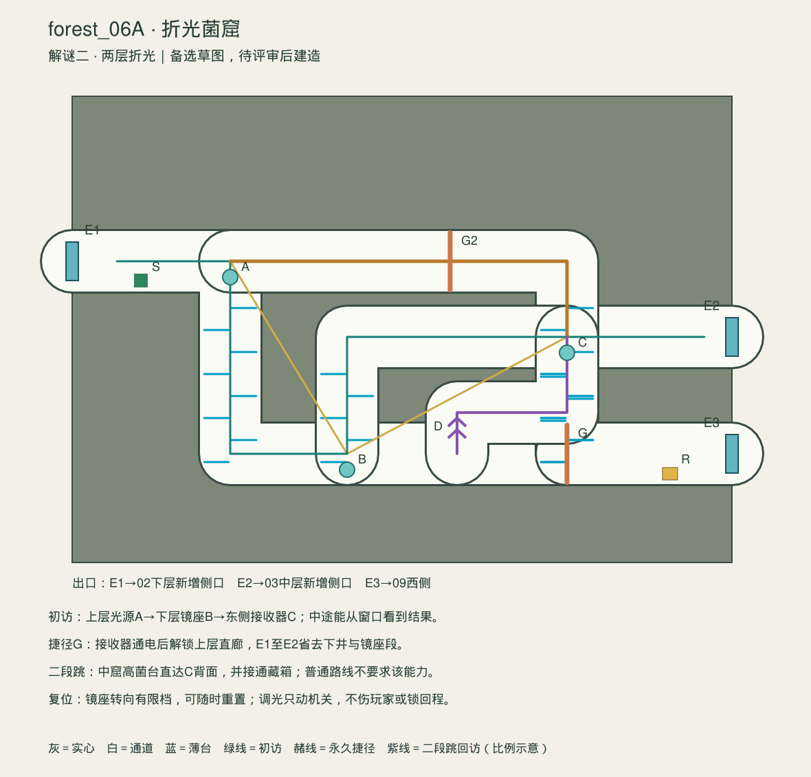
初访：上层光源A→下层镜座B→东侧接收器C；中途能从窗口看到结果。
捷径G：接收器通电后解锁上层直廊，E1至E2省去下井与镜座段。
二段跳：中窟高菌台直达C背面，并接通藏箱；普通路线不要求该能力。
复位：镜座转向有限档，可随时重置；调光只动机关，不伤玩家或锁回程。
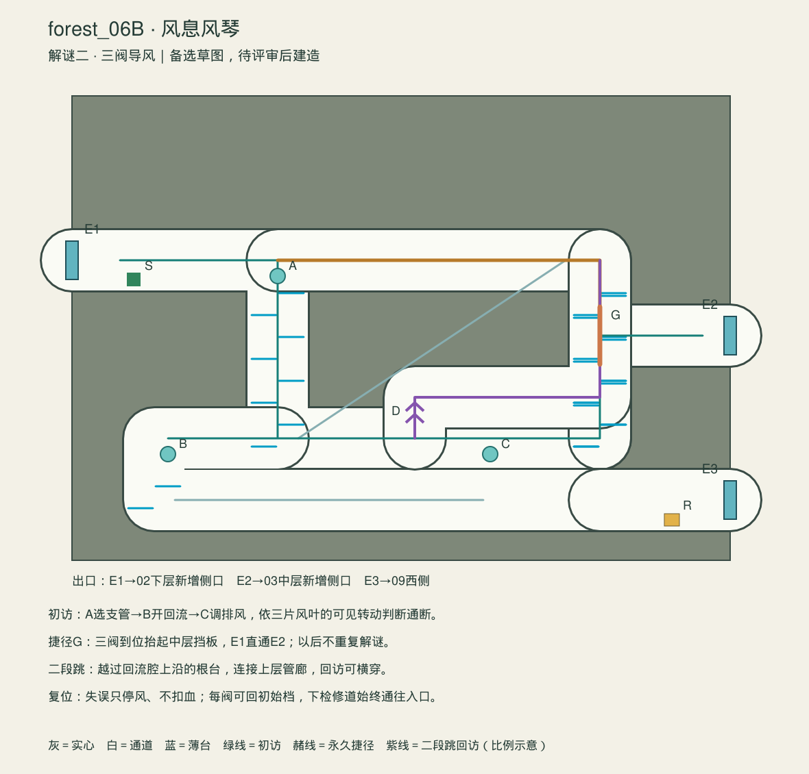
初访：A选支管→B开回流→C调排风，依三片风叶的可见转动判断通断。
捷径G：三阀到位抬起中层挡板，E1直通E2；以后不重复解谜。
二段跳：越过回流腔上沿的根台，连接上层管廊，回访可横穿。
复位：失误只停风、不扣血；每阀可回初始档，下检修道始终通往入口。
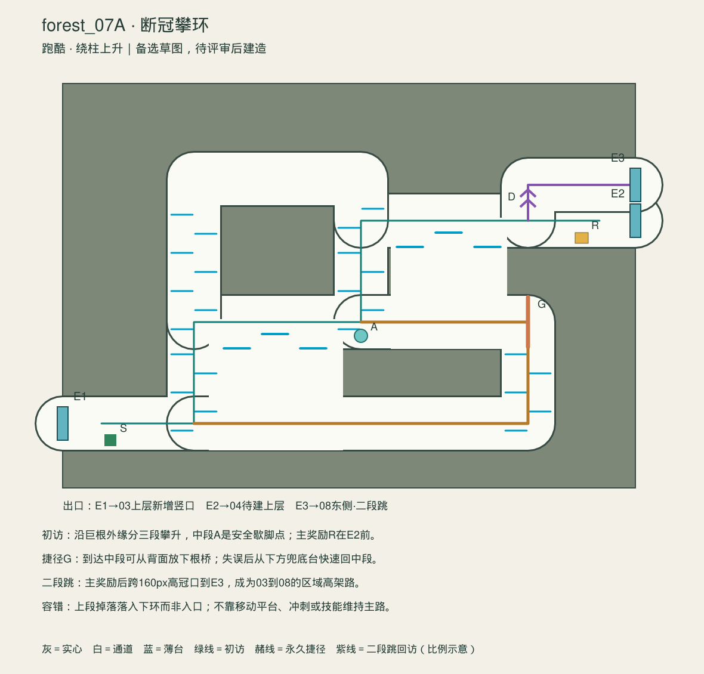
初访：沿巨根外缘分三段攀升，中段A是安全歇脚点；主奖励R在E2前。
捷径G：到达中段可从背面放下根桥；失误后从下方兜底台快速回中段。
二段跳：主奖励后跨160px高冠口到E3，成为03到08的区域高架路。
容错：上段掉落落入下环而非入口；不靠移动平台、冲刺或技能维持主路。
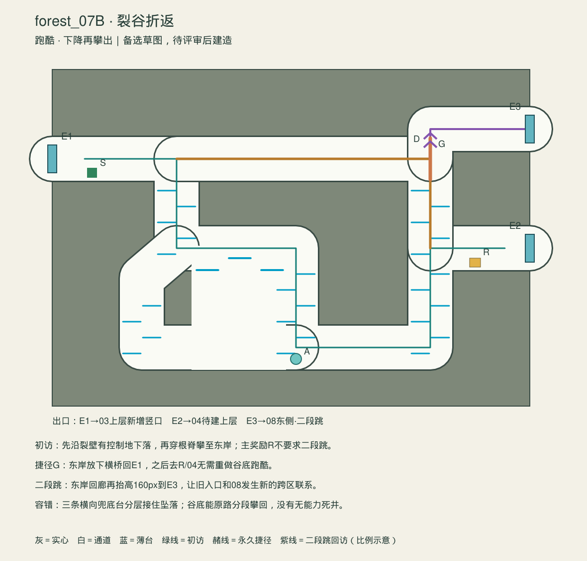
初访：先沿裂壁有控制地下落，再穿根脊攀至东岸；主奖励R不要求二段跳。
捷径G：东岸放下横桥回E1，之后去R/04无需重做谷底跑酷。
二段跳：东岸回廊再抬高160px到E3，让旧入口和08发生新的跨区联系。
容错：三条横向兜底台分层接住坠落；谷底能原路分段攀回，没有无能力死井。
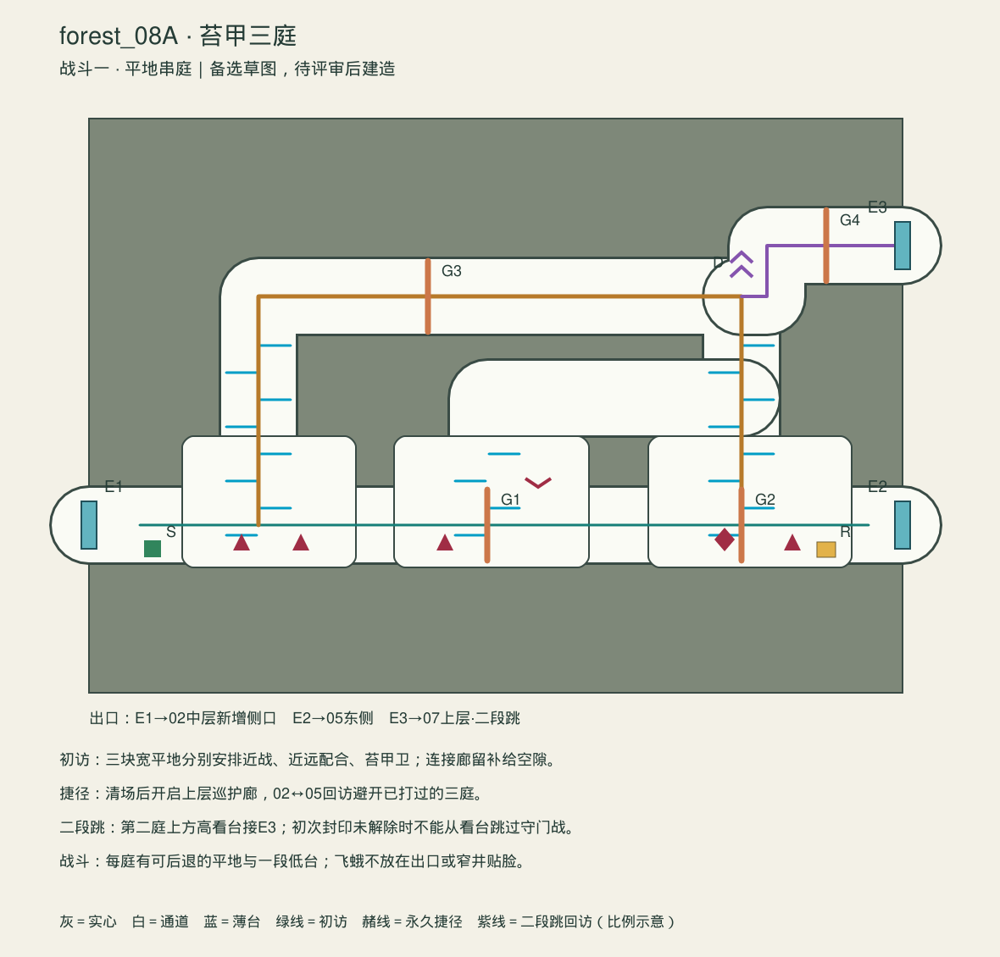
初访：三块宽平地分别安排近战、近远配合、苔甲卫；连接廊留补给空隙。
捷径：清场后开启上层巡护廊，02↔05回访避开已打过的三庭。
二段跳：第二庭上方高看台接E3；初次封印未解除时不能从看台跳过守门战。
战斗：每庭有可后退的平地与一段低台；飞蛾不放在出口或窄井贴脸。
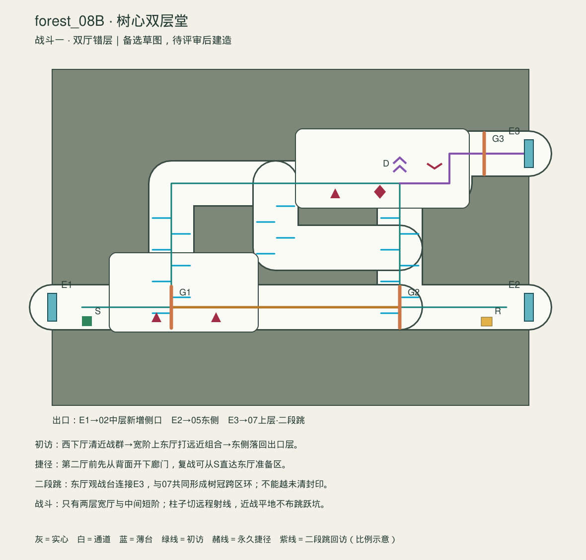
初访：西下厅清近战群→宽阶上东厅打远近组合→东侧落回出口层。
捷径：第二厅前先从背面开下廊门，复战可从S直达东厅准备区。
二段跳：东厅观战台连接E3，与07共同形成树冠跨区环；不能越未清封印。
战斗：只有两层宽厅与中间短阶；柱子切远程射线，近战平地不布跳跃坑。
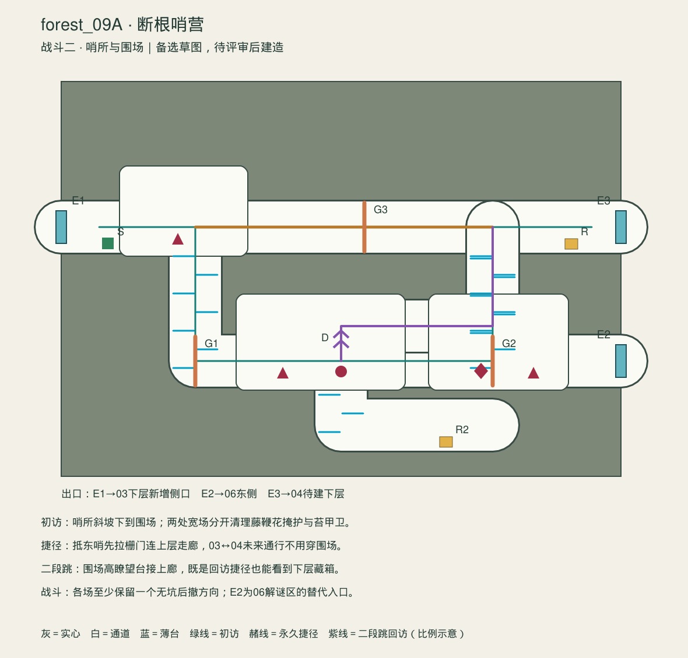
初访：哨所斜坡下到围场；两处宽场分开清理藤鞭花掩护与苔甲卫。
捷径：抵东哨先拉栅门连上层走廊，03↔04未来通行不用穿围场。
二段跳：围场高瞭望台接上廊，既是回访捷径也能看到下层藏箱。
战斗：各场至少保留一个无坑后撤方向；E2为06解谜区的替代入口。
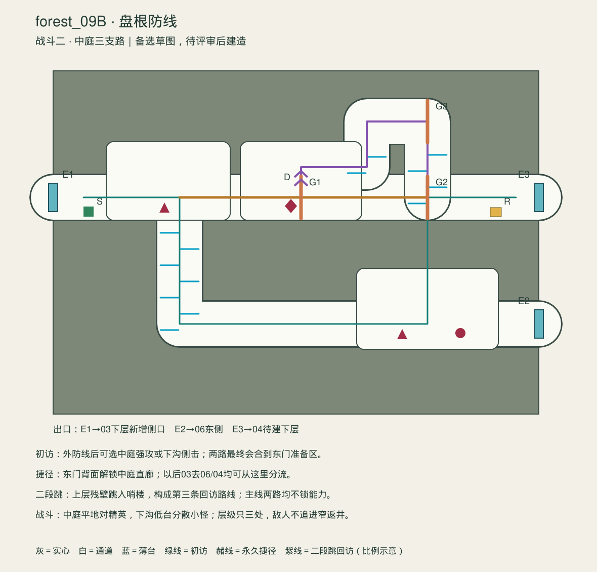
初访：外防线后可选中庭强攻或下沟侧击；两路最终会合到东门准备区。
捷径：东门背面解锁中庭直廊；以后03去06/04均可从这里分流。
二段跳：上层残壁跳入哨楼，构成第三条回访路线；主线两路均不锁能力。
战斗：中庭平地对精英，下沟低台分散小怪；层级只三处，敌人不追进窄返井。